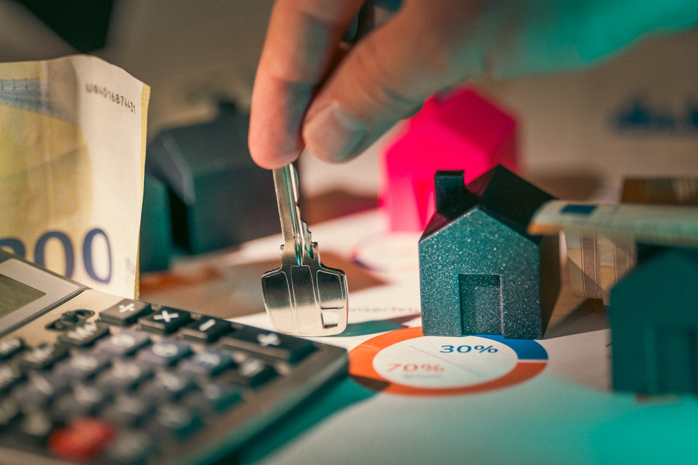

Refinancing Ballarat home loans is one of the most common reasons property owners contact a mortgage broker in regional Victoria. Whether you bought in Wendouree three years ago, upgraded in Alfredton, or have held a Sebastopol investment property for a decade, the case for reviewing your rate and lender has rarely been stronger. Interest rates shifted significantly through 2024 and 2025, and many Ballarat borrowers are still on a product that was competitive at settlement but no longer is.
This guide covers when refinancing makes sense, what it costs, how the process works, and what to watch for -- without the sales pitch. General information only; for advice specific to your situation, speak with a licensed broker.
Refinancing Ballarat: Why So Many Borrowers Switch Now
A rate gap of even 0.50% per annum on a $450,000 loan saves roughly $2,250 per year in interest. On Ballarat's median house price in the mid-$500,000s, the saving climbs further. The question is not whether refinancing is worth exploring -- it usually is -- but whether the break costs, discharge fees and new-loan setup costs eat into that saving before you reach break-even.
Common reasons Ballarat homeowners refinance
- The introductory or honeymoon rate has expired and the revert rate is uncompetitive.
- Your financial position has improved (income up, LVR below 80%) and you can qualify for better pricing.
- You want to access equity for renovations, an investment purchase or debt consolidation.
- Your current lender has removed features you relied on (offset, redraw, split-rate flexibility).
- You are switching from principal-and-interest to interest-only (or back) to match investment strategy.
For a structured review, the team at Home Loan Broker Ballarat compares products across a panel of 40-plus lenders, and can quickly establish whether refinancing stacks up given your current loan balance and break costs.
Refinancing Costs You Must Count
The single most common mistake is comparing new rate to old rate without accounting for the full cost of switching. A lower rate does not guarantee savings if the costs are high enough.
| Cost item | Typical range (AUD) | Notes |
|---|---|---|
| Discharge fee (existing lender) | $150 to $400 | Charged by most lenders when you close the loan. |
| Break cost (fixed-rate loans) | $0 to several thousand | Only applies if you are mid-fixed-term; can be significant. |
| New loan application fee | $0 to $600 | Many lenders waive this; negotiable. |
| Property valuation | $200 to $600 | New lender orders a valuation; sometimes waived. |
| Legal / settlement fee | $200 to $500 | Covers title transfer and settlement processing. |
| Lenders mortgage insurance (LMI) | Varies (can be thousands) | Applies only if your LVR exceeds 80% at the new lender. |
Total switching costs commonly fall between $700 and $1,500 for a straightforward variable-rate refinance. Break-even -- the point at which interest savings exceed the switching cost -- typically arrives within 6 to 18 months on a loan of $400,000 or more, assuming a rate saving of at least 0.40%.
How the Refinancing Process Works: Step by Step
- Rate and product review. Compare your current rate, fees, and features against the market. A broker pulls live rates across 40-plus lenders in a single session.
- Break-even calculation. Calculate total switching costs versus annual interest saving to confirm refinancing makes financial sense before proceeding.
- New application. Submit income documents, current loan statement, property details and ID to the new lender.
- Valuation. The incoming lender orders a property valuation. Ballarat property values have grown; a fresh valuation may lower your LVR and improve your rate tier.
- Formal approval. Conditional approval is issued, followed by unconditional approval once all conditions are met (typically 1 to 3 weeks).
- Settlement and discharge. The new lender pays out the existing loan; your old mortgage is discharged. Net process from application to settlement: 3 to 6 weeks.
Cashback Refinance Offers: What to Check
Several lenders periodically offer cashback incentives of $2,000 to $4,000 to attract refinancers. These can be genuinely valuable -- but only if the underlying rate is competitive. A $3,000 cashback on a loan that charges 0.60% more per annum than the market rate costs you roughly $2,700 per year in extra interest on a $450,000 balance, so the cashback is wiped out within about 14 months. The cashback evaporates quickly on an uncompetitive rate.
Broker comparison covers both rate and incentive so you weigh the true net saving, not just the headline.
Fixed versus variable rate when refinancing
Fixing your rate at refinance locks in certainty but removes flexibility. Most Ballarat refinancers in 2026 are opting for a split structure -- part fixed, part variable with an offset account -- to balance rate protection with the ability to make extra repayments. Your broker can model the scenarios based on your expected cashflow and property plans.
Frequently Asked Questions
How long does refinancing take in Ballarat?
From application to settlement, straightforward refinances typically complete in 3 to 6 weeks. Complex applications (self-employed income, multiple properties, or unusual security) may take longer. Pre-approval and rate lock can proceed faster -- sometimes within 48 to 72 hours -- while the formal application is processed.
Does refinancing affect my credit score?
Each credit application lodged with a new lender is recorded as a credit enquiry, which can temporarily affect your credit score. This is generally minor for a single refinance. Applying to multiple lenders simultaneously -- sometimes called rate shopping -- produces multiple enquiries and has a larger short-term impact. A broker submits a single application to the chosen lender, reducing this risk.
Can I refinance if my property value has fallen?
If a new valuation puts your loan-to-value ratio (LVR) above 80%, you may face lenders mortgage insurance or be limited to fewer lender options. Some lenders have more flexible LVR policies. A broker assesses which lenders are suitable given your current equity position before lodging any formal application.
This guide covers general information about refinancing home loans in Ballarat, Victoria. It is not personal financial or credit advice. Interest rate calculations are illustrative only. Speak with a licensed mortgage broker to assess your specific circumstances.